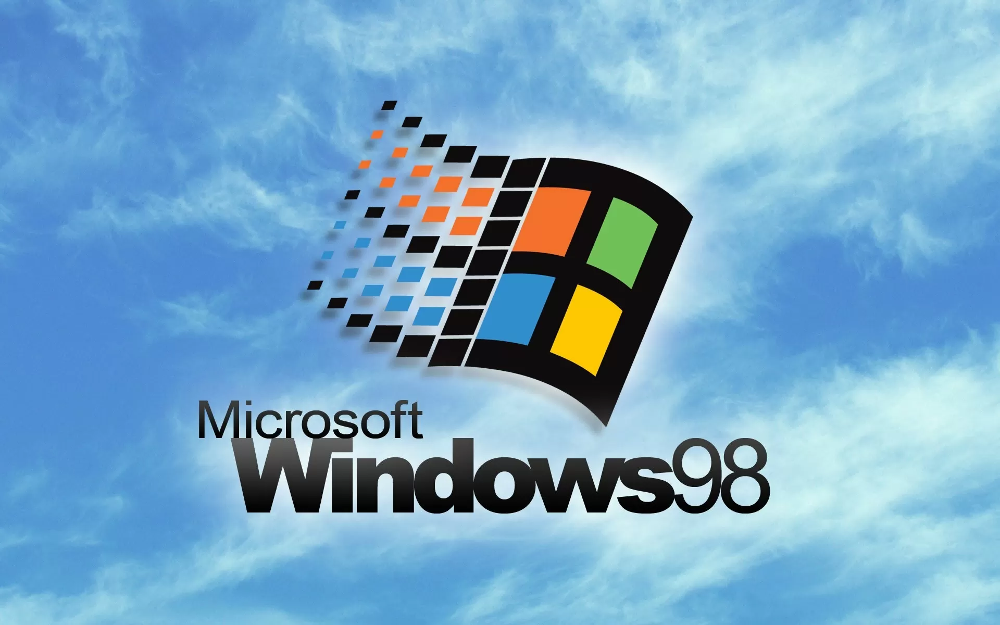

Bienvenue sur le jeu Pierre, Feuille, Ciseaux 98 !
Choisissez votre coup pour commencer à jouer, l'IA jouera
automatiquement une fois que vous aurez commencez.
Le premier arrivé à 10 remporte la partie !
Signe IA :
Botinator-PFC-4.124.38
